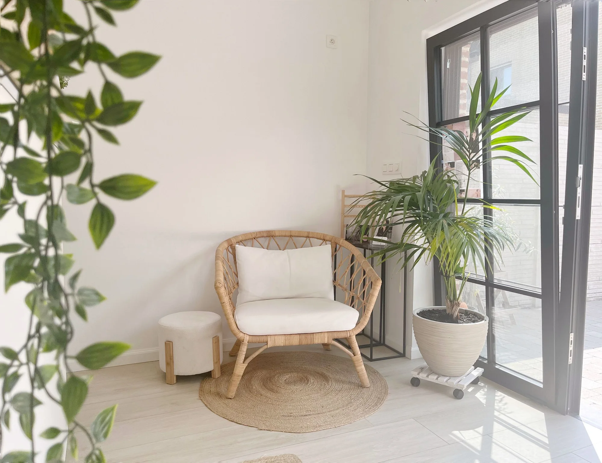
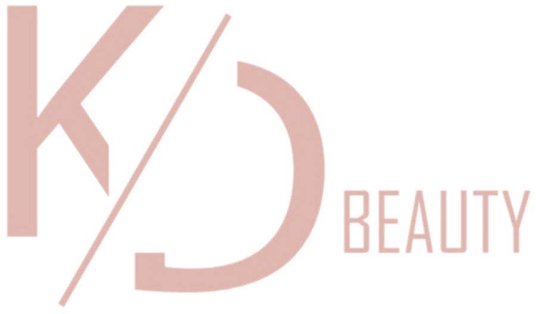
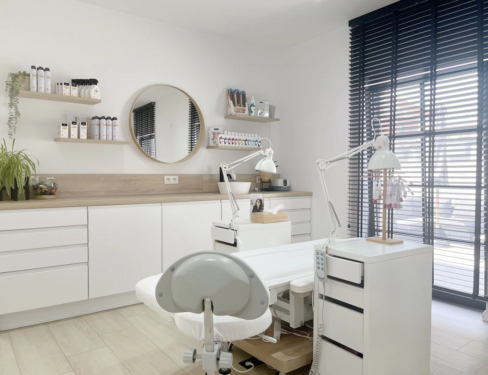
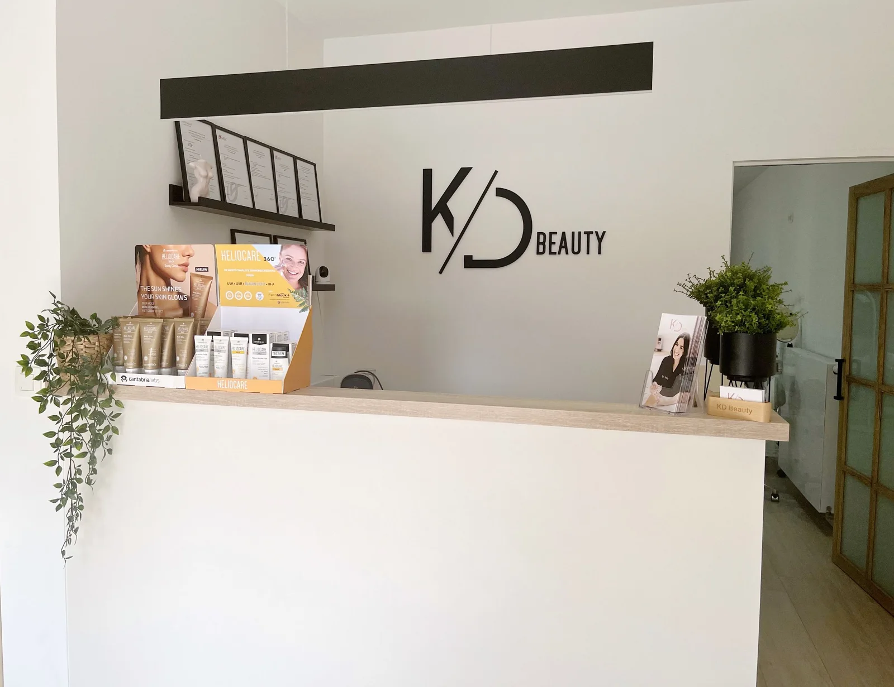
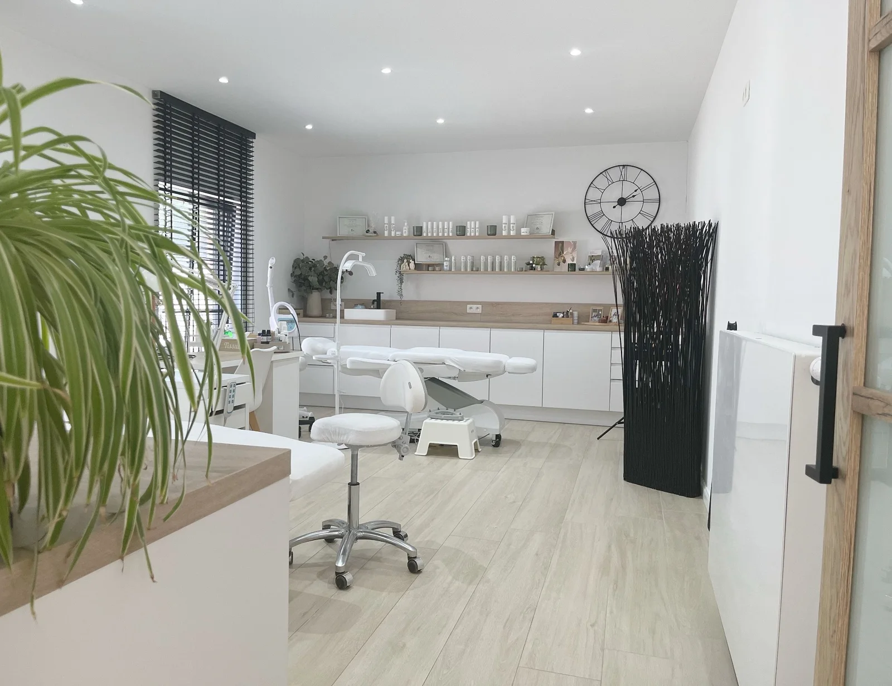

Verzorgd tot in je tenen.
Manicure, gelnagels en pedicure bij Kudret. In een lichte studio waar je even helemaal niets moet.


Handen, voeten
en wat meer.
Kudret werkt met veel zorg en neemt de tijd. Jij kiest wat je nodig hebt, zij doet de rest.
Manicure en gelnagels
Verzorgde nagels in de kleur die jij kiest, die mooi blijven zitten.
Pedicure
Voeten in goede handen, ook als ze wat extra zorg en aandacht nodig hebben.
Wenkbrauwen en bovenlip
Netjes epileren en in vorm brengen.
Gelaat en massage
Een gelaatsverzorging of een lichaamsmassage, voor wanneer je echt wil ontspannen.
Oorbellen schieten
Voor kinderen met een setje oorbellen erbij aan € 50.
Alle behandelingen en vrije uren vind je op Salonkee.
Kies je behandeling"Kudret is enorm goed in haar vak en ik vertrek altijd heel content met topresultaat terug naar huis!"Rwaida, via Salonkee
"Kudret is zeer begaan met haar klanten. Ze heeft veel kennis en ervaring en doet haar werk uitstekend!"
Atika, via SalonkeeVia de oprit,
en stevig duwen.
De ingang van KD Beauty vind je via de oprit. De deur gaat wat stroef, dus gewoon even stevig duwen. Binnen is het licht en rustig.


- 01Je boekt online en krijgt meteen de eerste vrije datum.
- 02Verplaatsen of annuleren kan tot 48 uur op voorhand.
- 03Annuleer je binnen de 3 dagen, dan ben je je voorschot kwijt.
- 04Betalen gaat cash of met Payconiq. Met de kaart lukt niet.
- Maandag9 tot 18 u
- Dinsdag9 tot 18 u
- Woensdag9 tot 13 u
- Donderdag9 tot 18 u
- Vrijdag9 tot 13 u
- Zaterdag en zondaggesloten